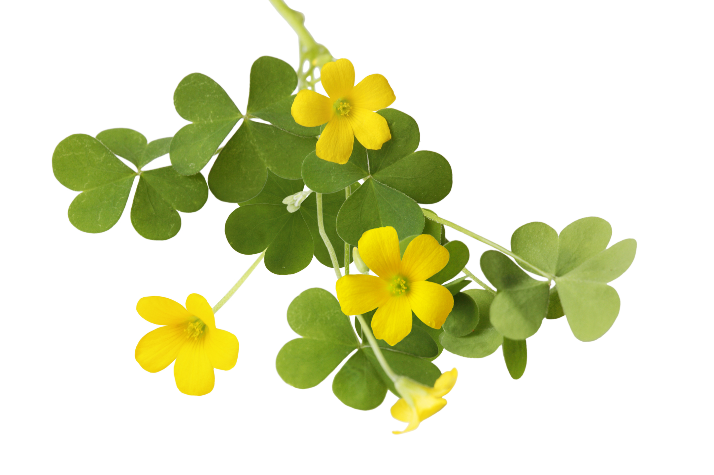

Explorando o Mundo das PANCs: Conhecendo e Utilizando Plantas Alimentícias Não Convencionais
O que são as PANCs?
PANCs são aquelas plantas que crescem naturalmente em determinada região e que, apesar de serem comestíveis e muitas vezes nutritivas, não são tradicionalmente cultivadas para o consumo humano em larga escala. Elas podem incluir ervas, flores, frutas, raízes e folhas que são parte do ecossistema local, mas geralmente não aparecem nas prateleiras dos supermercados.
Em um mundo cada vez mais consciente da importância da alimentação saudável e sustentável, as Plantas Alimentícias Não Convencionais (PANCs) ganham destaque como protagonistas de uma gastronomia rica em sabor, nutrição e história.
Neste post, embarcaremos em uma jornada para conhecer cinco dessas estrelas botânicas:
- Azedinha;
- Caruru;
- Dente de leão;
- Ora-pro-nóbis e
- Peixinho.
Azedinha: Um toque cítrico e refrescante
A azedinha, com seu sabor cítrico e refrescante, é uma PANC nativa da Europa, mas que se adaptou perfeitamente ao solo brasileiro. Podem ser consumidas frescas em saladas, refogados, tortas e até mesmo sucos detox. Um toque único para quem busca um sabor marcante e benefícios para a saúde.
- Ricas em vitaminas A, C e K, ferro, cálcio e potássio
Caruru: Um clássico reinventado
O caruru, PANC com raízes africanas, já é um clássico da culinária brasileira, especialmente na Bahia. Mas você sabia que suas folhas também são comestíveis e nutritivas? Ricas em proteínas, fibras, vitaminas e minerais, elas podem ser refogadas, usadas em sopas, tortas e até mesmo como base para um pesto verde delicioso e nutritivo. Uma forma inovadora de aproveitar o sabor e os benefícios dessa PANC tão querida.
Dente de Leão: Um símbolo de força e vitalidade
Muito além de uma florzinha delicada, o dente de leão é uma PANC repleta de propriedades medicinais e nutricionais.Podem ser consumidas frescas em saladas, chás, sucos e até mesmo em conservas. Já a raiz, torrada e moída, se transforma em um café naturalmente descafeinado e rico em antioxidantes. Uma PANC que celebra a força e a vitalidade da natureza!

- Ricas em vitaminas A, C e K, cálcio, potássio e ferro
Ora-pro-nóbis: Um presente dos Andes
Originária dos Andes, a ora-pro-nóbis é uma PANC trepadeira que se destaca por seu alto teor de proteínas, superior até mesmo ao feijão! Podem ser refogadas, usadas em tortas, sucos e até mesmo como base para um hambúrguer vegetariano suculento e nutritivo. Uma PANC que nos presenteia com sabor e nutrição em abundância!
- Ricas em vitaminas A, B e C, ferro, cálcio e fósforo
Peixinho: Um toque de cor e sabor
O peixinho, com suas folhas variegadas e sabor levemente picante, é uma PANC nativa da Ásia que conquistou o paladar brasileiro. Podem ser consumidas frescas em saladas, refogados, tortas e até mesmo servir de enfeite para pratos de carne ou peixe. Uma PANC que agrega cor, sabor e nutrição à sua mesa!
- Ricas em vitaminas A, C e K, cálcio, potássio e ferro
As PANCs: Um universo de possibilidades
As PANCs representam muito mais do que simples ingredientes culinários. São portais para um mundo de sabores, aromas, cores e histórias que enriquecem nossa cultura alimentar e conectam-nos com a natureza. Ao incorporá-las em nosso dia a dia, celebramos a biodiversidade, a sustentabilidade e o poder transformador da alimentação. Experimente, explore e se apaixone pelas PANCs! Sua cozinha e seu corpo agradecerão! Uma das coisas mais emocionantes sobre as PANCs é a diversidade que elas oferecem. Desde a ora-pro-nóbis, rica em proteínas, até o azedinha, que adiciona um toque cítrico às saladas, há uma infinidade de opções para descobrir e experimentar. Muitas dessas plantas têm propriedades medicinais e nutricionais únicas, oferecendo benefícios para a saúde que vão além do simples prazer gastronômico.
Cultivo e Uso das PANCs
Uma das melhores maneiras de experimentar as PANCs é cultivá-las em seu próprio jardim. Muitas delas são resistentes e se adaptam bem a diferentes condições climáticas, o que as torna uma excelente opção para quem deseja diversificar sua produção de alimentos. Além disso, ao cultivar PANCs, você está contribuindo para a preservação da biodiversidade e apoiando práticas agrícolas sustentáveis. No entanto, mesmo que você não tenha espaço para um jardim, ainda pode desfrutar das PANCs. Elas podem ser encontradas em feiras de produtores locais ou até mesmo colhidas em áreas naturais com permissão adequada. A chave é estar aberto para experimentar novos sabores e explorar novas possibilidades culinárias.
Mas Atenção!
- Antes de consumir qualquer PANC, certifique-se de que a planta seja comestível e esteja livre de
agrotóxicos.
- Consulte um especialista em botânica ou um nutricionista para obter mais informações sobre
as
propriedades e benefícios de cada PANC.
- Cultive PANCs em seu próprio jardim ou procure por elas em
feiras de produtores locais.
Gostou? Saiba mais em um vídeo explicativo sobre as PANCs
Deixe um comentário!